1. Introduction
Chart est un outil graphique de visualisation de données
initialement développé pour les données au format
BIMG.
Il est basé sur la librairie de fonctions NCAR Graphics. Il permet
de représenter l'information sous forme de dessin couleur, d'isocontours
et/ou de vecteurs et possède quelques options de texte. Il supporte
aussi la plupart des projections de NCAR Graphics et peut superposer une
carte géographique aux données. A l'occasion du projet
CLIPPER, d'autres format de lecture ont été pris en
compte: Le format DIMG et le format NetCdf (sous
reserve pour ce dernier, du respect de certaines normes, actuellement normes
GTD1.3 (ioipsl) et SESAM).
Chart est divisé en plusieurs blocs, indépendants
les uns des autres et possédant chacun leur entrée de données.
Actuellement, il existe trois blocs qui traitent les couleurs, les isocontours
et les vecteurs. Il existe aussi deux autres blocs qui s'occupent de la
carte et du texte. Il est à noter que la configuration de la carte
influence tous les blocs, étant donné que la projection choisie
déterminera le tracé des données. Chaque bloc produit
une partie de dessin qui sera assemblée aux autres pour créer
le dessin final.
Chaque entrée peut accepter un fichier de données, un
fichier masque et un fichier grille. Comme chaque bloc est indépendant,
des données de masque et de grilles différentes peuvent être
spécifiées à chaque entrée. Les seules restrictions
sont qu'une zone commune doit être couverte par l'ensemble des fichiers
de données et que les fichiers de grille et de masque doivent avoir
la même taille que les fichiers de données auxquels ils s'appliquent.
Référez-vous à la section 9
pour plus de détails sur le format des fichiers.
Les fichiers de données et les options sont fournis sur la ligne
de commande lors de l'appel de chart, ou peuvent se trouver dans
un fichier de configuration. Les options relatives aux couleurs débutent
toutes par clr, aux contours par cnt et aux vecteurs par
vec.
Par exemple, pour un tracé couleur des données du fichier
topex.bimg, on taperait la ligne de commande suivante :
chart -clrdata topex.bimg
Pour tracer uniquement la région située entre -82°E et
-62°E de longitude et 20°N et 40°N de latitude, avec la bathymétrie
en couleur et les isocontours de topex.bimg, on taperait la ligne de commande
suivante:
chart -clrdata bathy.bimg -cntdata topex.bimg -zoom -82 -62 20 40
Cet exemple illustre la division de chart en blocs:
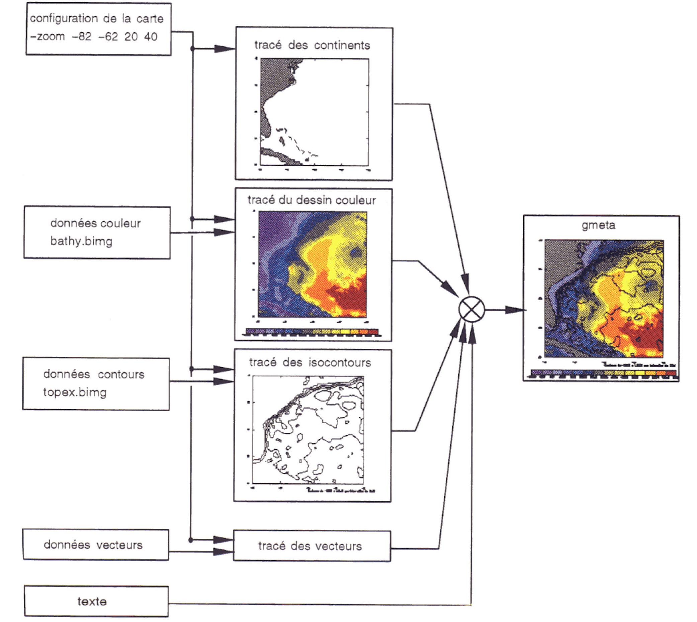
Voici un bref aperçu des différentes possibilités
de chart :
| Cartes : |
Chart trace automatiquement une carte sur les données.
Il est possible de ne pas tracer les continents, ou de ne tracer que leur
contour. Plusieurs types de projection sont possibles. D'autres options
permettent de contrôler le tracé des méridiens, de
ne tracer qu'une partie des données, etc. (voir section
3) |
| Couleur : |
par défaut, chart utilise une palette de couleur
interne, qui définit la couleur des mers, des continents, etc. Il
est possible de définir sa propre palette et de la fournir à
chart.
Voir la section 4 à ce sujet.
Pour colorer les données, chart calcule des limites qui
serviront à déterminer la couleur de chaque point selon sa
valeur. Il existe deux méthodes de calcul des limites (linéaire
et égalisée) et il est aussi possible d'imposer les limites
à l'aide d'un fichier. (voir section 4) |
| Isocontours : |
Des isocontours sont automatiquement tracés dès
que des données sont fournies au bloc. Il est possible de choisir
le nombre d'isocontours tracés, l'intervalle qui les sépare,
ainsi que leur valeur. Plusieurs autres options sont disponibles pour modifier
les line labels ainsi que le texte d'information. (voir section
5) |
| Vecteurs : |
Chart produit un tracé de vecteurs dès que des
données vectorielles sont fournies. Il est possible de sous-échantilloner
un champ. Plusieurs autres options permettent de modifier l'apparence des
vecteurs (longueur, couleur). Les vecteurs peuvent être colorés
selon leur module, ou selon le champ de données du bloc couleur.
(voir section 6) |
| Texte : |
10 chaînes de caractères peuvent être
ajoutées au dessin. Il est possible de sélectionner la taille
des caractères ainsi que leur police. Chart suppose aussi
la plupart des options de PLOTCHAR (module de NCAR Graphics).
(voir section 7) |
| Ajouts en surimpression |
Possiblité d'ajouter des tracés de lignes ou de marqueurs
en surimpression sur une carte. (voir section 8) |
Les sections suivantes décrivent en détail les options associées
à chaque bloc, ainsi que les différents formats de fichiers.
2. Options générales
Cette section décrit les quelques options qui s'appliquent à
l'ensemble du dessin et non à un seul bloc.
| -p fichier |
Indique la palette de couleurs à lire. Par défaut, chart
crée une palette de 14 couleurs, et définit la couleur des
océans, des continents et des valeurs spéciales. Voir
la section 9.1 pour en savoir
plus sur les fichiers de palette. |
| -o fichier |
Sélectionne le nom du fichier de métacode à créer.
Par défaut, chart crée un fichier nommé gmeta. |
| -pdf |
Avec cette option, le fichier de sortie est au format pdf, et s'appelle gmeta1.pdf. |
| -rev |
Inverse les couleurs de background et de foreground. Utile surtout
pour obtenir un fond blanc pour imprimer sans avoir à modifier la
palette de couleurs. |
| -lev integer |
Sélectionne la (les) couche(s) à dessiner. Il est possible
de spécifier plusieurs couches à la fois, auquel cas un fichier
est créé avec plusieurs frames.
Une virgule (,) sépare les couches énumérées
une à une, et un tiret (-) indique une série de couches.
Par exemple, pour dessiner les couches 1, 3, 5, 7, 8, 9, 10 :
-lev 1,3,5,7-10
0 indique à chart de dessiner toutes les couches. |
-dep real
-ndep real |
Permet de spécifier une profondeur en unité de profondeur
du fichier bimg (en gén\ral mètres), au lieu d'un niveau
(option -lev). L'option -ndep permet de dessiner le niveau
le plus proche (nearest depth) de la profondeur demandée. L'option
-dep est prévue pour provoquer une interpolation pour avoir
les champs exactement à la profondeur demandée. Les chaines
CLR_DEPTH etc... sont mises à jour. |
| -time integer |
Sélectionne le (les) pas de temps à dessiner. Il est
possible de spécifier plusieurs pas de temps à la fois, auquel
cas un seul fichier est créé avec plusieurs frames. Pour
obtenir plusieurs pas de temps, utilisez la même syntaxe que pour
-lev. |
| -mask fichier |
Permet de masquer une partie des données. Les points de grille
masqués sont remplacés par une valeur spéciale et
ne sont pas pris en compte lors des calculs. Cette option spécifie
le masque pour toutes les entrées de données et correspond
aux options -clrmask, -cntmask
et -vecmask. Le fichier
mask travaille avec un masque de 1 sur terre et 0 sur mer. |
| -maskopa fichier mask opa |
Idem à l'option mask mais travaille avec un masque de type OPA,
ie
avec
0 sur terre et 1 sur mer. L'option -mask, originale dans
chart
travaille avec un masque de 1 sur terre et 0 sur mer. |
| -grid fichier |
Permet de traiter des données dont la grille est irrégulière.
Cette option spécifie la grille pour toutes les entrées de
données et correspond aux options -clrgrid,
-cntgrid
et -vecgrid. |
| -gridxy fichier |
Permet de spécifier un fichier grille dans lequel, la latidude
et la longitude des points sont des fonctions de (i,j). Cette option est
une généralisation importante de l'option -grid. Elle
peut d'ailleurs être utilisée systématiquement en remplacement
de -grid. Quand on l'utilise, les couleurs sont traitées
par les routines de contourage, et non plus par les "color cell array"
(option -clriso activée par défaut). |
|
|
| -showgrid fichier |
Permet de visualiser une grille en overlay sur une carte. Pour l'instant
tous les points sont pris, il faut donc souvent zoomer. Attention, cette
grille n'est absolument pas utilisée pour projeter les données.
Elle est seulement visualisée sur un fond de carte. |
| -direct |
Permet d'utiliser des fichiers de données (clrdata
ou cntdata) de type à accès
direct, comme ceux produits par le T3E dans le projet CLIPPER. Dans ce
cas, l'enregistrement numéro 1 du fichier contient dans l'ordre:
comment1, ni, nj, nk, nt, ndim, x1, y1, dx, dy, spval, (h(k),k=1,nk),(t(k),k=1,nt).
Cette
option est maintenant OBSOLETE. Elle est maintenue
pour compatibilité. Les fichiers sont reconnus automatiquement. |
| -ijgrid |
Force à tracer la carte avec des axes labellés en indices
des tableaux. Ignore la grille de l'entete bimg. Cette option est aussi trés utile
avec les fichiers netcdf qui ont les coordonnées toujours en lon, lat. |
| -pixel |
Cette option est un racourci équivalent à la juxtaposition des options
-noproj, -noint and -ijgrid fréquemment utilisées ensemble. De plus avec cette option, la carte résultante n'est pas distordue, chaque pixel est représenté par un carré.
|
| -forcexy |
Avec cette option, la grille sera toujours considérée comme totalement irrégulière. Elle est utile lorsque
l'algorithme de base de chart/coupe ne permet pas de détecter une grille irrégulière comme celle de la configuration PERIANT, par
exemple.
|
| -spval new spval |
Permet de changer la valeur spval contenue dans l'entête du fichier
par la new spval spécifiée ici. Cette option est particulièrement
intéressante pour les fichiers NetCdf issus d'OPA, qui ont une "missing value" erronée.
|
| -spback |
Permet de colorer les valeurs spval avec la couleur de fond du dessin. Cette option est utile
si l'on veut rendre transparent le fond du dessin pour superposer des images.
|
| -scale scale factor |
Permet de multiplier par un facteur les valeurs de la zone que l'on trace, que ce soit des contours ou des couleurs.
Cette option peut etre utilisée pour changer les unités d'un fichier, au moment de son tracé.
|
| -abs |
Cette option permet d'utiliser la valeur absolue des champs passés en entrée, pour les couleurs
et les contours.
|
| -mean new mean |
Permet de changer la valeur moyenne de la zone que l'on trace, par la valeur moyenne specifiée
par new mean . Cette option est particulièrement intéressante pour faire des comparaisons
entre des jeux de données différent par leur valeur moyenne. Si l'option -scale est aussi utilisée,
le facteur d'échelle est appliqué avant la correction de la moyenne.
|
| -log10 |
Avec cette option, le log10 du champ lu dans le fichier d'entrée est calculé avant de faire le plot.
Si l'option -scale est aussi utilisée, le facteur d'échelle est appliqué avant le
calcul du log10. Afin de ne pas poser de problèmes, les valeurs négatives ne sont pas tracées.
|
| -system "command string" |
Fait un appel system depuis la ligne de commande de chart.
Passe la commande dès la lecture de l'option. On peut donc mettre
autant de -system qu'on le désire. Si un fichier résultant
de la commande doit être utilisé dans des options -clrdata,
-cntdata etc, penser à mettre l'option -system avant
l'option -clrdata ....
Cette option permet de faire des prétraitements de fichiers,
par exemple. |
| -team, -noteam |
Affiche, ou n'affiche pas en bas à droite de la fenêtre
le nom de l'équipe (MEOM-LEGI) (affichée par défaut) |
| -dat, -nodat |
Affiche ou non la date à laquelle le dessin a été
effectué en bas à gauche de la fenêtre de dessin.
(pas affichée par défaut) |
| -english |
Permet d'avoir les textes d'information (contours, vecteurs...) dans
la langue de Shakespeare. |
| -ioipsl |
Permet de fixer un certain nombres d'options propres aux fichiers NetCdf
de type IOIPSL. ( voir ANNEXE NetCdf ) |
| -sesam |
Permet de fixer un certain nombres d'options propres aux fichiers NetCdf
de type SESAM. ( voir ANNEXE NetCdf ) |
3. Configuration de la carte
Au départ, chart a été développé
pour visualiser des données cartographiques, c'est pourquoi une
carte est tracée par défaut avec les données. La section
suivante décrit comment configurer une carte. Si vos données
ne sont pas cartographiques, l'option qui vous intéresse est -noproj,
décrite ci-dessous.
| -proj CC |
Sélectionne la projection. Chart supporte plusieurs projections
de NCAR Graphics.
CC peut prendre les valeurs suivantes (voir le document de Contouring
and Mapping Tutorial, page 85) :
GL - globe entier
ST - stereographic
OR - orthographic
LE - lambert equal-area
GN - gnomonic
AE - azimuthal equidistant
SV - satellite view
ME - mercator
CE - cylindrical equidistant (défaut)
MO - mollweide type |
| -noproj |
Cette option désactive toutes les options relatives aux cartes
(projections, tracé des continents, etc...). Utile lorsque les données
ne sont pas cartographiques. |
| -zoom |
Indique la région des données à dessiner. Cette
région doit être commune à tous les fichiers donnés
en argument. Par défaut, la région maximale est dessinée.
Syntaxe : -zoom xmin xmax ymin ymax |
| -center |
Cette option permet de spécifier la zone à dessiner en donnant son centre et
un rayon de visualisation. Elle remplace l'option -zoom. Les unités à utiliser sont celles
des axes de la carte.
Syntaxe : -center xcenter ycenter radius |
| -shift |
Permet de shifter en longitude une carte sur le globe entier. Commode par exemple
quand on veut représenter l'atlantique à partir d'un fichier dont la grille va de 0 a 360 deg.
On code, par exemple -shift -180 -zoom -100 30 -75 70 . Les tableaux seront shiftés
de 180 deg avant de faire le zoom. Il faut que les données soient périodiques.
Syntaxe : -shift shift_en_longitude |
| -360 |
Cette option permet de spécifier un zoom compris entre 0 et 360 deg en longitude, alors que
les coordonnées du fichier sont comprises entre -180 et 180. Dans le cas de fichiers ORCA, cette option
est particulièrement intéressante pour traiter le Pacifique
( la grille ORCA démmare a 73 E puis passe à
-180deg). Cette option ne marche pour l'instant que pour des grilles complètement irrégulieres.
|
| -marg |
Indique la région à représenter sur le dessin.
Cette région peut être plus grande ou plus petite que celle
décrite par -zoom, selon l'effet désiré.
Syntaxe : -marg xmin xmax ymin ymax
note : -marg ne devrait être utilisé que
pour modifier l'apparence de la carte, et non pour visualiser une partie
des données, étant donné que les calculs sont effectués
sur les données spécifiées par -zoom. Si vous
n'utilisez que -marg, les calculs se font par défaut sur
l'ensemble des données, même si une partie seulement en est
affichée. |
| -map / -nomap |
Dessine ou non les continents sur la carte. Les continents sont remplis
avec la palette définie à l'index 2. (défaut -map) |
| -hi / -lo |
L'option -hi permet de spécifier une base de données continents à haute
résolution, disponible dans NCARG 4.3, (Earth..1). Par défaut, on utilise la version basse
résolution, ce qui correspond à l'option -lo. |
| -outl |
tracé du contour des continents seulement |
| -perim / -noperim |
Dessine ou non un cadre autour de la carte. (défaut -perim) |
| -grad / -nograd |
Dessine ou non une graduation sur le cadre. (défaut -grad)
note : -noperim enlève automatiquement la graduation. |
| -noxlab |
Pas de labels sur l'axe des x. (longitude) |
| -noylab |
Pas de labels sur l'axe des y. (latitude) |
| -xyplot |
Détermine l'emplacement de la carte sur le plot frame NCAR.
Les coordonées doivent se trouver entre 0.0 et 1.0.
Syntaxe : -xyplot xmin xmax ymin ymax |
| -c coordinates_file |
Permet de sauver dans un fichier ASCII (spécifíé)
les coordonnées 'plotter' utilisées par Chart.
Utile pour réaliser 2 plots avec rigoureusement la meme position.
Exemple:
PLOTFRAME
0.17500E+00 : xmin
-0.10000E+02 : wxmin
0.87500E+00 : xmax
0.20000E+02 : wxmax
0.20000E+00 : ymin
-0.10000E+02 : wymin
0.90000E+00 : ymax
0.20000E+02 : wymax
xmin xmax ymin ymax sont les coordonnées 'plotter' que l'on
peut spécifier avec -xyplot.
wxmin etc.. sont les coordonnées utilisateurs 'world coordinates',
des données ou du zoom. |
-xstep int:subd:larg
-ystep int:subd:larg |
Détermine l'intervalle des graduations sur l'axe horizontal
ou vertical. Il est possible de spécifier des subdivisions, ainsi
que la largeur du trait des divisions principales. (utile pour l'option
grille)
Syntaxe : -xstep int:subd:larg
où :
-
int - intervalle
-
subd - nombre de subdivisions
-
larg - largeur du trait des divisions principales
par exemple, pour obtenir une division tous les deux degrés
et une subdivision aux degrés :
-xstep 2:2
pour obtenir une subdivision tous les demi-degrés, et
un trait deux fois plus large que les divisions principales :
-xstep 2:4:2 |
| -cslab scale |
Permet de modifier la tailles des caractères des labels sur
les axes, par un facteur d'echelle. |
-xgrid
-ygrid |
Sélectionne le tracé des lignes horizontales ou verticales
sur le dessin. L'intervalle employé est celui spécifié
par -xstep ou -ystep,
incluant les subdivisions.
note : lorsque la projection sélectionnée n'est
pas CE, les méridiens sont tracés à l'aide de la fonction
MAPGRM, qui ne supporte pas un intervalle différent en x et y. Donc,
dès que la projection est autre que CE, -xstep et -ystep
spécifient l'intervalle et la grille pour les x et les y.
exemple : chart -clrdata topex.bimg -proj
GL -rlat 40 -rlon 20 -xgrid |
-rlat
-rlon |
Détermine le centre de la carte. Par défaut, le centre
de la carte correspond au centre des données. |
Exemples:
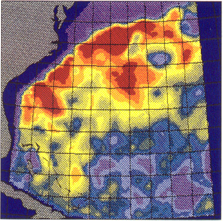
chart -clrdata topex.bimg -proj OR -xstep 2 -xgrid -zoom -80 -60 20
40
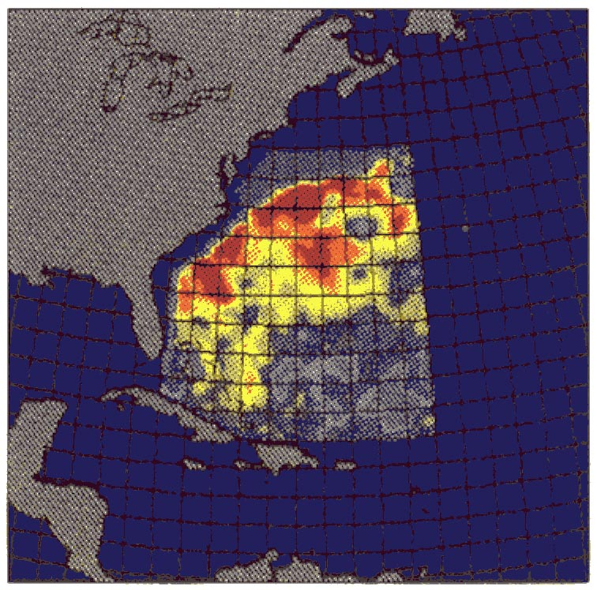
chart -clrdata topex.bimg -proj OR -xstep 2 -xgrid -zoom -80 -60 20
40 -marg -90 -50 10 50
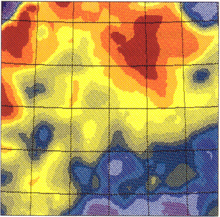
chart -clrdata topex.bimg -proj OR -xstep 2 -xgrid -zoom -80 -60 20
40 -marg -75 -60 20 40

chart -clrdata topex.bimg -prog GL -rlat 40 -rlon -20 -xgrid
4. Couleurs
Toutes les options se rapportant à la couleur commence par le préfixe
clr.
Pour ceux qui connaissent déjà chart, le nom des
anciennes options correspondantes est indiqué à la section
11.2 et peut toujours être employé, mais il est recommandé
d'utiliser la nouvelle syntaxe.
Si aucune palette de couleurs n'est spécifiée, chart
utilisera une palette interne, définissant le fond blanc, le texte
et les lignes noires, ainsi que les continents marron.
Selon le nombre de couleurs, 80 au maximum, chart calcule des
limites, qui sont les valeurs min et max entre lesquelles une certaine
couleur est attribuée à une donnée. Les limites peuvent
être calculées selon deux méthodes ou être lues
dans un fichier. (voir les options -clrmet
et -clrlim)
4.1 Fichiers
| -clrdata fichier |
Spécifie le fichier de données à colorer.
Indication sur l'écran (std output) du minimum et du maximum
du champ à tracer. Si le champ est constant, passe automatiquement
en -clrmet 1. |
| -clrmask fichier |
Permet de remplacer une partie des données. Les points de grille
masqués sont remplacés par une valeur spéciale et
ne sont pris pas en compte lors des calculs. (voir aussi -mask) |
| -clrgrid fichier |
Permet de traiter des données dont la grille est irrégulière.
Le fichier de grille contient coordonnées de chaque point spécifié
par -clrdata. (voir aussi -grid) |
| -clrlim fichier |
Les limites seront lues dans ce fichier au lieu d'être calculées.
Le fichier de limites doit définir au minimum le nombre de couleurs
dans la palette plus 1. Si plus de limites
sont définies, elles ne seront pas utilisées. |
| -clrmark fichier |
Avec cette option, seule les limites indiquées dans le fichier seront utilisées
pour marquer la palette de couleur. En revanche, cette option impose que la valeur minimum
et la valeur maximum à prendre en compte sont respectivement la première et la dernière du
fichier. La méthode de coloration est forcée à linéaire entre les 2 extrêmes. Cette
option est utile avec des palettes ayant beaucoup de couleurs. Le format du fichier est le même que celui de -clrlim.
Voir aussi l'option -lbsc.
Example:
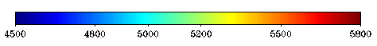
|
| -clrlout fichier |
Lorsque les limites sont calculées par chart, cette option
permet de les récupérer dans un fichier. Attention, cette
option écrasera le fichier donné en argument s'il existe
déjà. |
4.2 Options
de calcul
| -clrmet [1 ou 2
] |
Deux méthodes de calcul des limites sont disponibles.
Méthode 1 : chart trouve les valeurs minimale et
maximale du champ de données et divise la plage de valeurs par le
nombre de couleurs (méthodes linéaire).
Méthode 2 : chart procède par égalisation
; de façon à attribuer une quantité égale de
points de grille à chaque couleur (méthode égalisée).
Il est aussi possible de forcer les limites à certaines
valeurs au moyen d'un fichier. (voir aussi l'option -clrlim) |
-clrint
-clrnoint
-noint |
Comme la distance entre deux points de grille peut devenir importante
lors d'un zoom, chaque point est alors représenté par un
carré large de plusieurs pixels. L'option -clrint indique
à chart de calculer les pixels entre les points par interpolation.
Le résultat sera alors plus lisse.
-clrint est l'option utilisée par défaut. Utilisez
-clrnoint pour avoir une représentation exacte de vos données. Cepandant,
notez que si on utilise une grille irrégulière (option -grid ou -gridxy) alors les données
sont interpolées sur une grille régulière. Pour voir les données brutes dans le cas d'une grille irrégulière, utiliser la combinaison -noproj avec -noint, sans option -grid
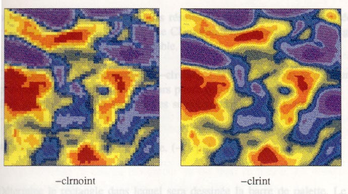 |
| -clrexp real |
Lorsque des données sont d'un ordre de grandeur élevé
ou très petit, cela peut causer des problèmes d'espace sous
la barre de palette. -clrexp utilise une puissance de dix par laquelle
chart
divisera les nombres avant de les afficher. Un format approprié
peut alors être utilisé (voir l'option -format,
section 7.2) et l'échelle peut être indiquée sous la
barre de palette au moyen de l'option -string
(section 7.2). Par exemple :
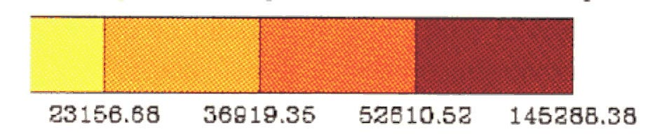
pourrait être modifié avec les options :-clrexp
3
-format PALETTE f10.2 -string 0.95 0.6 1 1 "x10|S|3"
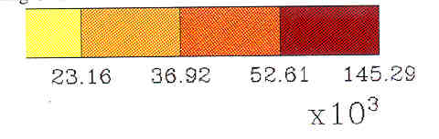 |
| -clrmin real
-clrmax real |
Valeurs minimale et maximale entre lesquelles on désire que
le calcul des limites s'effectue. Les autres valeurs satureront aux couleurs
extrêmes de la palette. Il est possible de ne préciser que
-clrmin ou -clrmax. |
| -clrmsk |
Permet de masquer avec la couleur pour les données manquantes, les valeurs en
dehors des limites spécifiées par clrmin et clrmax. Sans cette
option, les valeurs inférieures à clrmin sont de la couleur clrmin
et les valeurs supérieures à clrmax sont de la couleur de clrmax. |
| -clrmskc |
Identique à l' option -clrmsk hormis que les couleurs
utilisées pour les valeurs inférieures à clrmin sont de la couleur index 8
de la palette et les valeurs supérieures à clrmax sont de la couleur index 9
de la palette. |
| -clrmean new mean |
Permet de changer la valeur moyenne de la zone que l'on trace (colors), par la valeur moyenne specifiée
par new mean . Cette option est particulièrement intéressante pour faire des comparaisons
entre des jeux de données différent par leur valeur moyenne. Si l'option -scale est aussi utilisée,
le facteur d'échelle est appliqué avant la correction de la moyenne.
|
| -clrscale clr scale factor |
Permet de multiplier par un facteur les valeurs de la zone que l'on trace avec des couleurs.
Cette option peut etre utilisée pour changer les unités d'un fichier, au moment de son tracé.
|
| -clrabs |
Cette option permet d'utiliser la valeur absolue des champs passés en entrée, pour les couleurs
seulement.
|
4.3 Autres options
| -clrvar nom_de_variable_ncdf |
Spécifie le nom de la variable dans un fichier au format NetCdf.
Si ce nom n'est pas fourni dans la ligne de commande, un warning est affiché
et le choix est proposé entre toutes les variables existantes
dans le fichier. Il s'agit alors de donner le numéro correspondant. |
| -clrmodif chaine_modifier |
Permet de modifier le nom des dimensions, de certains attributs de
variables et de certaines variables dans un fichier NetCdf. Dans cette
version, la norme par défaut est la norme GTD1.3 telle qu'elle est
implémentée dans IOIPSL. (Voir annexe
CDF pour les valeurs par défaut). La syntaxe de la chaine_modifier
est la suivante: 'old_name1=new_name1,old_name2=new_name2' .Par exemple
-clrmodif 'x=lon,y=lat'. Par defaut, il y a une ambiguité pour les dimensions
deptht et time_counter car ce mot clé est également utilisé pour les variables associées.
Afin de différencier dimension et variable, on utilisera par exemple la syntaxe -clrmodif v_deptht=z ou
-clrmodif v_time_counter=time pour modifier les variables. Bien sûr la combinaison est possible comme dans
-clrmodif time_counter=t,v_time_counter=time. |
| -clriso |
La couleur est normalement produite en colorant chaque pixel de la
carte. Cette méthode est rapide lors des calculs, mais a comme inconvénient
de créer d'énormes fichiers postscript à l'impression.
L'option -clriso indique à chart de procéder
par remplissage d'isocontours. Le temps de calcul est multiplié
par quatre ou cinq, mais le résultat est plus lisse et le postscript
créé peut être jusqu'à 30 fois plus petit.
note : cette option crée parfois des résultats "bizarres"
si elle est utilisée avec une projection CE (cylindrique équidistante).
Il s'agit d'un bug NCAR incontournable. |
| -clrlev integer |
Permet de spécifier les niveaux du fichier spécifié
par -clrdata à plotter |
| -clrdatamod |
Cette option est une alternative à -clrdata.
Les données pour la couleur proviendront d'un module des vecteurs
plutôt que d'un fichier de données. Il faut, bien entendu,
que des données soient spéficiées avec l'option -vecdata. |
| -clrlog10 |
Cette option permet de colorer le log10 du champ que l'on veut regarder, sans perturber éventuellement
un autre champ qui serait tracé avec des contours. Cette option, contrairement à -log10,
limite son effet aux couleurs.
|
| -clrpal / -clrnopal |
Affiche ou non une barre de palette. (-clrpal est l'option par
défaut) |
| -clrxypal |
Détermine le rectangle dans lequel sera dessinée la barre
de palette. Le cadre est donné
en coordonnées "plot frame", entre 0.0 et 1.0.
Syntaxe : -clrxypal xmin xmax ymin ymax |
| -clrnocol |
Cette option empêche le tracé des données colorées.
Surtout utilisée en interne par chart pour la coloration
des vecteurs (section 6.2) et pour
les fichiers de configuration (section
8.2).
Par exemple, si les vecteurs sont colorés selon un scalaire
donné par -clrdata, il peut être utile de ne pas tracer
le scalaire en question. |
| -clrdim integer |
Lorsque le fichier de données comporte plus d'une dimension,
cette option spécifie la dimension à dessiner. Voir la section
8.3 sur le format BIMG. -clrdim sélectionne une
dimension parmi ndim. |
| -vertpal |
Permet de tracer une palette de couleur dans le sens vertical au lieu
du sens horizontal (par défaut). Dans ce cas les valeurs par défaut
de xyplot et de xypal sont modifiées automatiquement
pour éviter les chevauchements entre palette et dessin. |
| -lbpal integer |
Permet de spécifier la position des labels dans les palettes,
verticales ou horizontales
-
0 : pas de labels
-
1 : labels en dessous ou à droite (défaut)
-
2 : labels au dessus ou à gauche
-
3 : des deux cotés
|
| -lbsc real |
Permet de spécifier un facteur multiplicatif pour la taille des caractères utilisés
pour le label de la palette quand on utilise l'option -clrmark. Par défaut, c'est 1, bien sûr.
Example: Avec option -clrmark seule (taille des labels fixée).
Example pour multiplier la taille par 1.3 ( -lbsc 1.3 ) :
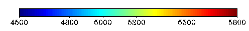
|
| -nobox |
Avec cette option, la palette de couleur est tracée sans traits
noirs séparant les couleurs et sans cadre. |
| -greyscale |
Utilise une palette interne de 11 niveaux de gris au lieu de la palette
par défaut à 14 couleurs. |
| -jetpal integer |
Permet le choix d'une palette de couleur de type JET avec un nombre
de couleurs spécifié, sans passer par un fichier palette. |
| -zebre integer |
Permet le choix d'une palette de couleur de type JET mais avec alternance
de bandes noires. |
| -ocean |
Permet de colorer les océans avec la couleur 4 de la palette.
Par défaut cette action est déactivée. |
| -palout |
Cette option permet de sortir le fichier palette (au bon format) correspondant
à la palette utilisée. Utile avec l'option -jetpal
puisqu'elle permet de retoucher manuellement une palette. Le fichier de
sortie est en standard le fichier used_palette. |
| -prev |
Palette reverse, renverse les couleurs d'une palette, aussi bien par
défaut que lue dans un fichier. |
5. Isocontours
Toutes les options se rapportant aux isocontours commencent par le préfixe
cnt.
Par défaut chart dessine automatiquement des isocontours
dès que les données sont entrées avec -cntdata.
Le nombre d'isocontours et leurs valeurs sont choisis par NCAR pour donner
un beau résultat (nice value). Il est possible, avec les options
décrites dans cette section, de modifier ces valeurs par défaut
pour obtenir exactement les isocontours désirés.
5.1 Fichiers
| -cntdata fichier |
Spécifie le fichier de données.
Modification de la lecture dans le cas où la spval est
nulle. Dans ncarg3.2, spval=0 indique que l'on n'utilise pas les
spval.
Il y avait donc problème, corrigé en remplaçant dans
ce cas les 0 par une spval par défaut. |
| -cntmask fichier |
Permet de masquer une partie des données. Les points de grille
masqués sont remplacés par une valeur spéciale et
ne sont pas pris en compte lors des calculs. (voir aussi l'option -mask) |
| -cntgrid fichier |
Permet de traiter des données dont la grille est irrégulière.
Le fichier de grille contient les coordonnées de chaque point du
fichier spécifié par -cntdata. (voir aussi l'option
-grid) |
| -cntlim fichier |
La valeur exacte de chaque isocontour est lue dans ce fichier. Le nombre
d'isocontours dépend du nombre de valeurs de ce fichier. |
| -cntlout fichier |
Lorsque les isocontours sont calculés par chart, cette
option permet de les récupérer dans un fichier. Attention,
cette option écrasera le fichier donné en argument s'il existe
déjà. |
| -cntlis integer |
LIS=Label Interval Specifier. Spécifie la fréquence
des lignes isocontours avec un label. Par exemple, cntlis 3 permet d'avoir
une ligne labellée toute les 3. |
| -cntsav fichier |
Permet de sauver dans un fichier ASCII au format overdata
les
coordonnées des lignes isocontours. Utiles pour pouvoir par exemple
utiliser une ligne particulière en overlay d'un autre plot. |
5.2 Modification des isocontours
| -cntnum integer |
Détermine le nombre d'isocontours. NCAR calculera l'intervalle
nécessaires pour obtenir N isocontours entre les valeurs maximale
et minimale contenue dans les données. |
| -cntint real |
Détermine l'intervalle entre les isocontours. Les isocontours
seront tracés à partir de la valeur minimale trouvée
dans les données. |
| -cntmin real |
valeur minimale à considérer lors des calculs d'isocontours |
| -cntmax real |
valeur maximale à considérer lors des calculs d'isocontours |
| -cntmean new mean |
Permet de changer la valeur moyenne de la zone que l'on trace (contours), par la valeur moyenne specifiée
par new mean . Cette option est particulièrement intéressante pour faire des comparaisons
entre des jeux de données différent par leur valeur moyenne. Si l'option -scale est aussi utilisée,
le facteur d'échelle est appliqué avant la correction de la moyenne.
|
| -cntscale cnt scale factor |
Permet de multiplier par un facteur les valeurs de la zone que l'on trace avec des contours.
Cette option peut etre utilisée pour changer les unités d'un fichier, au moment de son tracé.
|
| -cntabs |
Cette option permet d'utiliser la valeur absolue des champs passés en entrée, pour les contours
seulement.
|
5.3 Line Labels
Note : La plupart des options suivantes ne sont, en fait, qu'un accès
direct à certaines constantes de NCAR Graphics. Veuillez vous référez
au document «contouring adn Mapping Tutorial » pp. 393 à
416 pour plus de détails. Lorsqu'une option correspond directement
à une constante NCAR, le nom de la constante est indiquée.
| -cntlbc integer |
Label Box Color index (LBC).
Détermine l'index de couleur des boîtes entourant les
line labels. |
| -cntllb integer |
Line Label Box flag (LLB). Valide pour LLB égal à 2 ou
3.
Détermine le type de cadre autour des line labels.
-
0 - aucun cadre
-
1 - seul un périmètre est dessiné autour des
labels. (même couleur que le texte)
-
2 - une boîte de couleur (index LBC) est dessinée autour
des labels.
-
3 - 1 et 2, soit une boîte de couleur avec un cadre.
|
| -cntill integer |
Spécifie l'épaisseur du trait de la 'label box', en multiple
de la largeur normale. Par défaut 0, pas de boite. |
| -cntllp integer |
Line Label Positioning (LLP).
Détermine si oui ou non des line labels seront dessinés
et de quel type.
0 =aucun label,
2 = défaut
(voir page 406 du document « Contouring and Mapping Tutorial »
pour plus de détails). |
| -cntlw real |
Largeur du trait des isocontours. Deux points, suivis d'une valeur,
indiquent la largeur du trait des isocontours étiquetés.
Défaut 1. |
| -cntlabc integer |
Détermine l'index de couleur du texte des line labels. (une
couleur spéciale dont l'index est entre 10 et 19 peut être
utilisée, voir section 9.1) |
5.4 Texte d'information
Le texte d'information est la chaîne de caractères qui
indique habituellement les valeurs des isocontours minimum et maximum,
ainsi que l'intervalle entre les isocontours. Cette chaîne peut être
modifiée et plusieurs variables peuvent être utilisées.
Voir à ce sujet la page 404 du document « Contouring and Mapping
Tutorial ».
| -cntilb integer |
Information Label Box flag. (ILB)
Choisit le type de cadre autour du texte d'information
-
0 - aucun cadre
-
1 - seul un périmètre est dessiné autour du texte.
(même couleur que le texte.)
-
2 - une boîte de couleur (index LBC) est dessinée autour du
texte.
-
3 - 1 et 2, soit une boîte de couleur avec un cadre.
|
| -cntilc integer |
Index Label Color (ILC)
Index de la couleur du texte d'information. (Une couleur spéciale
dont l'index est entre 10 et 19 peut être utilisée, voir section
8.1) |
| -cntilxy real real |
Coordonnées en X et Y du texte d'information, exprimées
en unité « plot frame » entre 0.0 et 1.0.
Voir -cntilp ci-dessous pour savoir à quel point du texte
correspondent ces coordonnées. |
| -cntilp integer |
Information Label Positionning flag. (ILP)
Détermine le point décrit par les coordonnées
de -cntilxy. (défaut 4)

|
| -cntilt string |
Information Label Text (ILT)
Chaîne du texte d'information. Plusieurs variables peuvent être
utilisées dans cette chaîne, référez-vous à
la page 404 du document « Contouring and Mapping Tutorial ».
défaut : Contours de $CMN$ a $CMX$ par intervalles de
$CIU$ ou
MIN : $CMN$ MAX: $CMX$ C.I. $CIU$ si on est
avec l'option -english |
| -cntils real |
Permet de spécifier la taille des caractères utilisés
dans le texte d'information des labels. La valeur par défaut est
de 0.012. |
| -cntlls real |
Permet de spécifier la taille des caractères utilisés
dans les labels d'isocontours. La valeur par défaut est de 0.010. |
5.5 Autres options
| -cntvar nom_de_variable_ncdf |
Spécifie le nom de la variable dans un fichier au format
NetCdf. Si ce nom n'est pas fourni dans la ligne de commande, un warning
est affiché et le choix est proposé entre toutes les variables
existantes dans le fichier. Il s'agit alors de donner le numéro
correspondant. |
| -cntmodif chaine_modifier |
Permet de modifier le nom des dimensions, de certains attributs de
variables et de certaines variables dans un fichier NetCdf. Dans cette
version, la norme par défaut est la norme GTD1.3 telle qu'elle est
implémentée dans IOIPSL. (Voir annexe
CDF pour les valeurs par défaut). La syntaxe de la chaine_modifier
est la suivante: 'old_name1=new_name1,o;d_name2=new_name2. Par exemple
-cntmodif
'x=lon,y=lat' |
| -cntdash |
Force les lignes de contour négatives à
être en tirets. |
| -cntshade |
Grise les contours négatifs d'un contourage. Cette option peut
s'appliquer avec ou sans -cntdash, qu'elle complète. |
| -cntlev integer |
Permet de spécifier les niveaux du fichier spécifié
par -cntdata à tracer. |
| -cntlog10 |
Cette option permet de prendre le log10 du champ que l'on veut regarder, sans perturber éventuellement
un autre champ qui serait tracé avec des couleurs. Cette option, contrairement à -log10,
limite son effet aux contours.
|
| -cntexp real |
Lorsque les données sont d'un ordre de grandeur
élevé ou très petit, cela peut causer des problèmes
d'affichage des labels -cntexp est une puissance de dix par
laquelle chart divisera les nombres avant de les afficher. Un format
approprié peut être alors utilisé. (voir l'option -format) |
| -cntcwm real |
Character Width Multiplier (CWM)
Multiplie la taille des caractères associés
aux isocontours. Affecte les line labels ainsi que le texte d'information. |
| -cntdim |
Lorsque le fichier de données comporte plus d'une dimension,
cette option spécifie la dimension à dessiner. Voir la section
9.3 sur le format BIMG.
-cntdim sélectionne une dimension parmi ndim. |
| -cntrc1 real |
Regular Scheme Constant 1 (RC1).
Spécifie la distance entre le début d'un
isocontour et le premier label sur cet isocontour lorsque le mode de positionnement
des labels est 2 (LLP). Réduire cette valeur, ainsi que RC2,
augmente la quantité de labels sur le dessin. (défaut chart
0.15, défaut NCAR 0.25) |
| -cntrc2 real |
Regular Scheme Constant 2 (RC2)
Spécifie la distance
entre les labels sur un même isocontour. Le positionnement et la
quantité de labels sur un dessin sont grandement affectés
par RC1 et RC2 lorsque LLP est 2. (défaut chart 0.15, défaut
NCAR 0.25) |
Rappel : la couleur des isocontours est déterminée
par l'index 5 de la palette de couleur.
Si cette couleur n'est pas spécifiée dans la palette, les
contours seront de la couleur du foreground.
6. Vecteurs
Par défaut, chart trace des vecteurs dès que des données
sont spécifiées avec l'une des options -vecdataXX.
Comme les vecteurs comportent plusieurs composantes, l'entrée de
données peut s'effectuer de plusieurs façons. On peut spécifier
les données dimension par dimension, auquel cas chaque fichier bimg
contient une composante, ou bien on peut définir le bimg comme contenant
plusieurs dimensions.
6.1 Fichiers
-vecdatax fichier
-vecdatay fichier |
Définissent les composantes X et Y des vecteurs à tracer.
La Nième couche au temps t (définie par -lev
et -time) de chaque fichier est lue et les
composantes sont assemblées pour former les vecteurs. |
| -vecdataxy fichier |
les composantes X et Y sont lues d'un même fichier. A la Nième
couche et au temps t (définis par -lev
et -time), les dimensions 1 et 2 sont assemblées
pour former les vecteurs. |
| -vecdatapsi fichier |
Le fichier spécifié contient des données de fonction
de courant desquelles seront dérivés les vecteurs. |
| -vecfilled |
Choisi un type de flèche plus épais. Par défaut, les flèches sont tracées avec
des simples lignes. On peut modifier la couleur des flèches avec l'option -vecaclr. |
| -vecmask fichier |
Permet de masquer une partie des données. Les points de grille
masqués sont remplacés par une valeur spéciale et
ne sont pas pris en compte lors des calculs. (voir aussi l'option -mask) |
| -vecgrid fichier |
Permet de traiter des données dont la grille est irrégulière.
Le fichier de grille contient les coordonnées de chaque point du
fichier spécifié par -vecdata. (voir aussi l'option
-grid) |
| -veclim fichier |
Limites utilisées pour la coloration des vecteurs. Voir la section
6.2 sur les couleurs, pour plus de détails sur le calcul des
limites. |
| -veclout fichier |
Lorsque les limites sont calculées par chart, cette option
permet de les récupérer dans un fichier. Attention, cette
option écrasera le fichier donné en argument s'il existe
déjà. |
6.2 Coloration
des vecteurs
| -vecclrmod |
Chart colorera les vecteurs selon leur module |
| -vecclr |
Chart colorera les vecteurs selon le champ de scalaires de -clrdata.
Les couleurs et les limites utilisées seront celles du bloc de couleurs
et le tracé des couleurs sera désactivé. |
| -vecaclr color index |
Chart utilise la couleur correspondant à l'indice donné en argument, pour
colorer les flèches obtenues avec l'option -vecfilled. Cet
indice peut prendre une valeur étendue à la partie réservée de la palette,
i.e les indices 1 à 19 inclus. Par défaut on utilise la couleur foreground, soit
l'indice 1 de la palette.
|
| -vecmet [1 ou 2] |
Deux méthodes de calcul des limites sont disponibles.
Méthode 1 : chart trouve les valeurs minimale et maximale
du champ de données et divise la plage de valeurs par le nombre
de couleurs.(méthode linéaire)
Méthode 2 : chart procède par égalisation,
de façon à attribuer une quantité égale de
points de grille à chaque couleur. (méthode égalisée)
Il est aussi possible de forcer les limites à certaines valeurs
au moyen d'un fichier. (voir l'option -vectlim) |
| -vecshade |
Grise les parties "spval" sur un dessin de vecteur. En cas de grille
irréguliere, cette option ne marche qu'avec l'option -gridxy
(pas -grid). |
6.3 Texte d'information
Note : La plupart des options suivantes ne sont, en fait, qu'un
accès direct à certaines constantes de NCAR graphics. Veuillez
vous référer au document « Vectors, a vector field
plotting utility » pp. 31 à 56 pour plus de détails.
Lorsqu'une option correspond directement à une constante NCAR, le
nom de la constante est indiqué.
Deux blocs de texte sont affichés par défaut. Ils indiquent
la taille des vecteurs minimum et maximum, selon le format ci-dessous
:
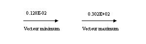
Les options suivantes permettent de modifier le contenu et la position
des textes. Notez que dans les noms d'options, mn réfère
au vecteur minimum et mx au vecteur maximum.
| -vecmns real
-vecmxs real |
Text Bloc Character Size (MNS et MXS).Taille des caractères
utilisés dans les blocs de texte. |
| -vecmnt string
-vecmxt string |
Vector Text String (character*36) (MNT et MXT). Chaînes de caractères
des blocs de texte. Défauts : vecteur minimum et Vecteur maximum,
avec une flèche sous les valeurs. (voir plus haut) |
| -vecmnxy real real
-vecmxxy real real |
Coordonnées des blocs de texte. (MNX, MNY, MXX et MXY). Voir
l'option -vecmnp pour savoir à quelle partie du texte correspondent
les coordonnées. |
| -vecmnp integer
-vecmxp integer |
Vector Text Bloc Positioning (MNP et MXP).
Indique quel point d'un bloc de texte est indiqué par les coordonnées
des options précédentes.
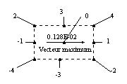 |
6.4 Autres options
| -vecvarx nom_de_variable_cdf |
Spécifie le nom de la variable dans un fichier au format
NetCdf, pour la composante x du vecteur. Si ce nom n'est pas fourni dans
la ligne de commande, un warning est affiché et le choix est proposé
entre toutes les variables existantes dans le fichier. Il s'agit
alors de donner le numéro correspondant. |
| -vecvary nom_de_variable_cdf |
Spécifie le nom de la variable dans un fichier au format NetCdf,
pour la composante x du vecteur. Si ce nom n'est pas fourni dans la ligne
de commande, un warning est affiché et le choix est proposé
entre
toutes les variables existantes dans le fichier. Il s'agit alors
de donner le numéro correspondant. |
| -vecmodifx chaine_modifier |
Permet de modifier le nom des dimensions, de certains attributs de
variables et de certaines variables dans un fichier NetCdf. Dans cette
version, la norme par défaut est la norme GTD1.3 telle qu'elle est
implémentée dans IOIPSL. (Voir annexe
CDF pour les valeurs par défaut). La syntaxe de la chaine_modifier
est la suivante: 'old_name1=new_name1,o;d_name2=new_name2. Par exemple
-vecmodifx 'deptht=depthu' |
| -vecmodify chaine_modifier |
Permet de modifier le nom des dimensions, de certains attributs de
variables et de certaines variables dans un fichier NetCdf. Dans cette
version, la norme par défaut est la norme GTD1.3 telle qu'elle est
implémentée dans IOIPSL. (Voir annexe
CDF pour les valeurs par défaut). La syntaxe de la chaine_modifier
est la suivante: 'old_name1=new_name1,o;d_name2=new_name2. Par exemple
-vecmodify 'deptht=depthv' |
| -veclev integer |
Permet de spécifier les niveaux du fichier spécifié
par -vecdata à tracer. |
| -vecvpo integer |
Permet le choix de l'origine des flèches dans un dessin de vecteurs.
Les possibilités sont:
integer < 0 : La tête du vecteur est au point de grille.
integer = 0 : Le centre du vecteur est au point de grille (défaut)
integer > 0 : La queue du vecteur est au point de grille.
Cette option (surtout avec integer > 0) s'avère intéressante
pour visualiser un profil de vitesse. |
| -vecnotrace |
Permet de définir des vecteurs avec -vecdataxy
ou autre, sans les tracer. Utile si l'on utilise juste -clrdatamod,
qui passera le module des vecteurs en clrdata, et évitera la superposition
des flèches par dessus. |
| -Cgrid |
Nouvelle option pour pouvoir tracer des vecteurs à partir des
fichiers U et V sur la grille C, avec indexage OPA. Prochainement, la version
pour SPEM ... (qui pose problème à cause des dimensions différentes
entre U et V). Cette option peut s'utiliser avec -vecdatax
et -vecdatay ou bien avec -vecdataxy. |
| -vecsub i1 i2 |
Sous-échantillonnage des vecteurs. Chart ne calculera les vecteurs
que pour un point sur i1 horizontalement et un point sur i2 verticalement.
i1 et i2 sont des entiers. |
| -vecvlc real |
Vector Low Cutoff value (VLC)
Indique la valeur minimale du module au-dessous de laquelle les
vecteurs ne seront plus tracés. Si on donne une valeur négative alors le vecteur minimum tracé
sera exactement celui spécifié quel que soit la valeur minimum du champ. |
| -vecvhc real |
Vector High Cutoff value (VHC)
Indique la valeur maximale du module au-dessus de laquelle les
vecteurs ne seront plus tracés. Si on donne une valeur négative alors le vecteur maximum tracé
sera exactement celui spécifié quel que soit la valeur maximum du champ, mais les vecteurs de
magnitude supérieure ne seront pas tracés. (voir -vecvrm pour contourner
ce problème.) |
| -vecvrm real |
Vector Reference Magnitude. (VRM)
Défini la magnitude de référence des vecteurs, utilisée dans la légende,
indépendamment du vecteur maximum sur la figure.
|
| -vecvrl real |
Maximum Vector Realized Length. (VRL)
Permet de multiplier la taille de tous les vecteurs par un facteur
d'échelle. |
| -vecvfr real |
Minimum Vector Fractional Length. (VFR)
Détermine la taille du vecteur minimum comme étant une
fraction du vecteur maximum. Permet de contrôler la variation de
longueur entre le plus grand et le plus petit vecteur. En particulier, pour
une valeur minimum non nulle (voir -vecvlc), il est intéressant
d'avoir une valeur VFR non nulle. Défaut 0.0 |
| -veclwd real |
Vector Linewidth (LWD)
Détermine la largeur du trait employé pour tracer les
vecteurs |
7. Texte
Jusqu'à 10 chaînes de caractères peuvent être
définies lors de l'appel de chart. Il est aussi possible,
à l'intérieur de chaque chaîne, d'utiliser des variables
qui seront remplacées par des valeurs internes lors de la production
du dessin. On peut, par exemple, mettre dans un titre le numéro
de la couche tracée :
"Numéro de couche : @CLR_ICOU@"
Lorsque le titre est ajouté au dessin, la variable CLR_ICOU est
remplacée par le numéro de la couche. Il est possible de
créer des chaînes de caractères dont le contenu dépend
du fichier traité.
Il est aussi possible d'utiliser les caractères de commande reconnus
par la fonction PLCHHQ de NCAR. Le caractère de contrôle est
| (pipe en UNIX). Par exemple, pour obtenir l'effet suivant :
3.258x10-2 m2s2
On utiliserait la syntaxe suivante : "3.258x10|S|-2|N|m|S|2|N|s|S|2"
Dans cet exemple, S est la commande plotchar Superscript et N est la
commande de retour à la normale. Référez-vous au document
« Plotchar, a character-plotting package », section 3.10 Functions
Codes, pages 13 à 18 pour plus de détails.
7.1 Liste des variables
Voici la liste des variables auxquelles chart donne accès.
Le nom de chaque variable débute par un préfixe décrivant
à quel fichier de données elle se rapporte. Pour utiliser
ces variables dans une chaîne de caractères, mettez simplement
son nom entre @.
| Entiers |
|
|
|
| COUCHE |
|
|
numéro de la couche |
| TSTEP |
|
|
pas de temps |
| CLR_NX |
CNT_NX |
VEC_NX |
nombre de points en X |
| CLR_NY |
CNT_NY |
VEC_NY |
nombre de points en Y |
| CLR_NZ |
CNT_NZ |
VEC_NZ |
nombre de couches |
| CLR_EXP |
CNT_EXP |
|
exposant (puissance de 10) |
| Réels |
|
|
|
| CLR_MIN |
CNT_MIN |
VEC_MIN |
valeur minimale réelle du champ |
| CLR_MAX |
CNT_MAX |
VEC_MAX |
valeur maximale réelle du champ |
| CLR_SPVAL |
CNT_SPVAL |
VEC_SPVAL |
valeur spéciale |
| CLR_DX |
CNT_DX |
VEC_DX |
degrés/points de grille en X |
| CLR_DY |
CNT_DY |
VEC_DY |
degrés/points de grille en Y |
| CLR_TIME |
CNT_TIME |
VEC_TIME |
champ H dans le BIMG |
| CLR_DEPTH |
CNT_DEPTH |
VEC_DEPTH |
profondeur de la couche |
| Texte |
|
|
|
| DATE |
|
|
date de création du dessin |
| CLR_STR1 |
CNT_STR1 |
VEC_STR1 |
record 1, BIMG |
| CLR_STR2 |
CNT_STR2 |
VEC_STR2 |
record 2, BIMG |
| CLR_STR3 |
CNT_STR3 |
VEC_STR3 |
record 3, BIMG |
| CLR_STR4 |
CNT_STR4 |
VEC_STR4 |
record 4, BIMG |
| CLR_JCNES |
CNT_JCNES |
VEC_JCNES |
traduit un jour CNES en texte |
7.2. Liste des options
| -title string |
Ajoute un titre pré positioné en haut et au centre du dessin. Les règles d'
utilisation des caractères spéciaux est la même que pour l'option -string. Avec
cette option, le titre est automatiquement positionné à 0.03 au dessus de la zone de plot.
|
| -string X Y S A string |
Ajoute une chaîne de caractères au dessin. Les paramètres
sont :
-
X, Y coordonnées entre 0.0 et 1.0 spécifiant
la position du texte.
-
S (size) taille des caractères. (1.0 = taille normale)
-
A (align) décrit à quelle extrémité du texte
correspond la position (X, Y) :
-1: côté gauche
0 : centre
1 : côté droit
-
string texte comportant au maximum 256 caractères.
(attention, tenir compte de la taille des variables)
|
| -stringr X Y S A angle
string |
Ajoute une chaîne de caractères au dessin en pouvant l'incliner.
Les paramètres sont :
-
X, Y coordonnées entre 0.0 et 1.0 spécifiant
la position du texte.
-
S (size) taille des caractères. (1.0 = taille normale)
-
A (align) décrit à quelle extrémité du texte
correspond la position (X, Y) :
-1: côté gauche
0 : centre
1 : côté droit
-
Angle : permet de spécifier un angle en degrés pour l'écriture
du texte.
-
string texte comportant au maximum 256 caractères.
(attention, tenir compte de la taille des variables)
|
| -stringrc X Y S A angle color
string |
Ajoute une chaîne de caractères au dessin en pouvant l'incliner.
Les paramètres sont :
-
X, Y coordonnées entre 0.0 et 1.0 spécifiant
la position du texte.
-
S (size) taille des caractères. (1.0 = taille normale)
-
A (align) décrit à quelle extrémité du texte
correspond la position (X, Y) :
-1: côté gauche
0 : centre
1 : côté droit
-
Angle : permet de spécifier un angle en degrés pour l'écriture
du texte.
-
color : permet de spécifier une couleur pour le texte. On donne un index par rapport à la palette courante.
L'index 1 correspond à la couleur 20 de la palette, ie la premi&eagrave;re couleur de la palette visible.
On peut sp´cifier un index négatif pour utiliser la partie cachée de la palette.
ATTENTION: si il y a seulement des 'overlay' dans les plots (et pas de données en couleur),
il faut aussi utiliser l'option -clrnocol (dans
le cas contraire chart termine avec une erreur).
-
string texte comportant au maximum 256 caractères.
(attention, tenir compte de la taille des variables)
|
| -format var fmt |
Modifie le format d'une variable numérique. Permet aussi de
contrôler le format de plusieurs éléments d'un dessin.
(voir liste ci-dessous).
-
var : nom de la variable dont on désire modifier le format.
-
fmt : format, de type fortran 77 standard. Les formats supportés
sont I, F et E.
Exemple, pour modifier le format des nombres apparaissant sous la barre
de palette :
-format PALETTE f5.2
En plus de pouvoir modifier le format de toutes les variables énumérées
plus haut, il est possible d'accéder aux formats des champs suivants
:
X_AXIS axe horizontal
Y_AXIS axe vertical
PALETTE barre de palette |
note : pour éliminer complètement la graduation sur un
des axes, utilisez -noxlab ou -noylab.
| -font police |
Sélectionne la police de caractères qui sera utilisée
pour tout le dessin. Consultez le document « Plotchar - a character
plotting package » page 22 pour la liste des polices disponibles.
Les polices donnant les meilleurs résultats à l'impression
sont :
21 HELVETICA
22 HELVETICA-BOLD
23 TIMES-ROMAN
24 TIMES-BOLD
Il est à noter que la police peut être changée à
l'intérieur même d'une chaîne de caractères,
avec la commande Fn où n est un numéro de police (les numéros
sont donnés dans la liste de la page 22 citée plus haut; voir aussi Annexe 12.
Par exemple, vous avez sélectionné la police HELVETICA et
vous désirez mettre un mot en bold dans une chaîne de caractères.
A l'appel de chart :
-font HELVETICA
-string .2 .9 1. -1 "un |F22|mot |F21|en bold"
donnera :
un mot en bold |
8. Ajouts de lignes ou de caractères
en surimpression
Il est possible de faire apparaître des lignes ou des marqueurs en
surimpression au dessus de la carte.
Pour écrire le nom d'un continent, pour positionner un mouillage,
ou pour définir une section hydrographique par exemple.
| -overdata fichier |
Superpose à la carte des lignes polygonales décrites
dans fichier. Le format est très simple: c'est un fichier
ASCII, chaque ligne donnant la position d'un point en longitude latitude.
Si on désire plusieurs segments, il faut insérer entre les
segments, une ligne 9999 9999. |
| -overout fichier |
Cette option avancée permet de sauver dans un fichier, la position des points overlay
en unités graphiques, i.e. compatibles avec les options -xyplot. Cette option est créée en
vue de faciliter des plots incrustés, comme par exemple dans le cas d'AGRIF.
|
| -overlw |
fixe l'épaisseur de trait pour les lignes superposées
(défaut 1). |
| -overmark fichier |
Superpose à la carte des marqueurs dont la position est donnée
dans fichier}. Même format de fichier que pour -overdata. |
| -overmk integer |
spécifie le type de marqueur à utiliser selon la norme
GKS :
1 = .
2 = +
3 = *
4 = o
5 = X
Par défaut le marqueur est 4 (petit cercle). |
| -overmksc real |
spécifie la taille du marqueur. Par défaut, 1. |
| -overclr integer |
Donne l'index de couleur de la courbe en overlay, index 1 étant
le premier de la palette visible (ie indice 20 du fichier palette). On peut sp´cifier un index négatif pour utiliser la partie cachée de la palette.
ATTENTION: si il y a seulement des 'overlay' dans les plots (et pas de données
en couleur), il faut aussi utiliser l'option -clrnocol (dans
le cas contraire chart termine avec une erreur). |
| -overmkclr integer |
Donne l'index de couleur des marqueurs en overlay, index 1 étant
le premier de la palette visible (ie indice 20 du fichier palette). |
9. Formats des fichiers
Cette section décrit les formats de tous les fichiers qui peuvent
être donnés en entrée à chart. Plusieurs
formats ont changé depuis la version 2.0, il est donc recommandé
de lire le texte « release notes » pour la mise à jour
des fichiers déjà existants.
9.1. Palette de couleurs
Un fichier de palette se divise en deux parties : les couleurs spéciales,
attribuées à des éléments du dessin tels que
les continents ou les océans, et les couleurs réservées
aux données, qui apparaîtront dans la barre de palette.
La définition d'une couleur comporte quatre éléments
: son index et les quantités de rouge, vert et bleu. L'index est
un nombre entre 0 et 99, alors que les autres valeurs doivent être
situées entre 0.0 et 1.0. Par exemple, pour définir l'index
10 comme étant du vert pur, on mettrait la ligne suivante dans le
fichier de palette :
10 0.0 1.0 0.0
Les index 0 à 19 sont réservés pour certains éléments
du dessin. Les index actuellement définis sont :
-
0 : background
-
1 : foreground
-
2 : continents
-
3 : valeur spéciale
-
4 : océans
-
5 : isocontours
-
6 : vecteurs
-
7 : contours de la ligne de côte
-
8 : couleur pour valeurs en dessous de la limite inférieure (option -clrmskc)
-
9 : couleur pour valeurs au dessus de la limite supérieure (option -clrmskc)
Les autres index sont réservés pour des besoins futurs. Ils
peuvent être utilisés pour certaines options de chart,
par exemple:
-cntilb Information Label Color
-cntlbc Label Box Color
Le reste des index, soit de 20 à 99, est utilisé pour
définir les couleurs attribuées aux données. Les index
doivent être définis dans un ordre croissant, mais il n'est
pas nécessaire de définir tous les index. Chart interpole
automatiquement les couleurs entre les index qui ne sont pas consécutifs.
Par exemple, pour obtenir un dégradé de 10 couleurs variant
du noir au magenta:
20
|
0.0
|
0.0
|
0.0
|
29
|
1.0
|
0.0
|
1.0
|
Finalement, il est possible d'insérer des lignes blanches entre
les index et d'ajouter des lignes de commentaires commençant par
le caractère #. Il est aussi à noter que tout ce qui se trouve
à droite d'une définition de couleur n'est pas pris en compte.
Un fichier de palette pourrait donc se lire comme suit :
# Palette pour les fichiers EKE
|
000
|
0.0
|
0.0
|
0.0
|
background
|
001
|
1.0
|
1.0
|
1.0
|
foreground
|
002
|
0.5
|
0.5
|
0.5
|
continents
|
005
|
1.0
|
0.0
|
0.0
|
isocontours
|
# couleurs pour les données
|
020
|
2.3
|
4.4
|
1.2
|
|
021
|
4.2
|
2.2
|
5.8
|
|
9.2. Fichier de configuration
Plutôt que de toujours taper tous les arguments sur la ligne de commande,
il est possible de créer un fichier de configuration. La syntaxe
en est très simple, elle est la même que pour la ligne de
commande, la seule différence étant qu'il ne doit y avoir
qu'une seule option par ligne. Toutes les options peuvent être utilisées
dans un fichier de configuration, même les options telles que -clrdata.
L'option -s est utilisée pour indiquer à chart
qu'il doit lire un fichier de configuration. D'autres options peuvent être
utilisées en même temps que -s sur la ligne de commande.
Les options sont lues de droite à gauche, et les dernières
options lues ont priorité. Par exemple, on peut créer un
fichier de configuration qui affiche les trois premiers records d'un fichiers
BIMG. Soit le fichier entete.conf :
-string 0.05 0.94 1-1 "@CLR_STR1@"
-string 0.05 0.90 1-1 "@CLR_STR2@"
-string 0.05 0.86 1-1 "@CLR_STR3@"
On pourrait ensuite utiliser ce fichier lors de l'appel de chart,
de la façon suivante :
chart -s entete.conf -clrdata topex.bimg -zoom -82 -62 35 45
Comme dans le cas d'une palette, les lignes blanches et les lignes de commentaires
commençant par # sont acceptées. Par contre, il ne faut rien
mettre à la fin d'une ligne d'option. Voici un exemple de fichier
de configuration qui ajoute la bathymétrie et un titre, ainsi que
le type d'unités à un tracé d'isocontours. (appelons
le bathy.set)
# fichier de configuration
-clrdata bathy.bimg
-p psi.2.pal
-string 0.05 0.90 2 -1 "Isocontours sur fond de bathymetrie"
-string 0.95 0.06 0.6 1 "Unites : m|S|2|N|s|S|-1| x10|S|@CNT_EXP@"
Ce fichier pourrait être utilisé dans une commande telle que
:
chart -cntdata topex.bimg -cntexp 4 -s bathy.set
9.3. Format BIMG
Un fichier BIMG est composé de deux parties principales : une entête
décrivant le contenu du fichier et les données décrites.
Pour une description un peu plus détaillée, et pour un exemple
de programme de lecture, cliquez ici.
Les 6 premiers records forment l'entête.
| Records 1 à 4: |
character*80 |
| |
Quatre chaînes de caractères pouvant servir à décrire
le fichier. |
| Record 5: |
integer (6) |
| |
NX : nombre de points en X
NY : nombre de points en Y
NZ : nombre de couches
NT : nombre de pas de temps
NDIM : nombre de dimensions par couche (1-3)
ICOD : code identifiant le type de données. Utilisé pour
les configurations par défaut. Obsolete actuellement. |
| Record 6 : |
real (5) |
| |
X1 : longitude du coin inférieur gauche
Y1 : latitude du coin inférieur gauche
DX : nombre de degrés par point de grille (longitude)
DY : nombre de degrés par point de grille (latitude)
SPVAL : valeur spéciale |
| Record 7 : |
real (NZ) |
| |
P(NZ) : tableau contenant la profondeur de chaque couche. |
Par la suite, le nombre de records dépend de NZ, NT et NDIM.
Vous pouvez ensuite utiliser la commande bimgchk pour vérifier
l'entête du fichier que vous venez de créer.
9.4. Format DIMG
Le format dimg a été développé pour le projet
CLIPPER afin d'étendre le concept du format bimg à des fichiers
d'acces direct, seuls utiles pour
des simulations tournant sur ordinateur massivement parrallele en mémoire
distribuée.
Ce format a l'avantage d'être compact et pratiquement autodescriptif
(si on se limite à des grilles régulières). On retrouve
a peu de choses prés les
éléments qui composent un fichier bimg, mais sous une
forme d'acces direct.
Chaque fichier bimg est un fichier de type binaire, 'unformatted', à
accès direct. Le premier record est réservé pour une
entête qui contient l'info
concernant le fichier, ( en particulier la longueur en octets des records)
puis à partir du record 2, les données sont stockées,
1 champs 2D/record.
Pour une description un peu plus détaillée, et pour un
exemple de programme de lecture, cliquez ici.
Outre chart et coupe, les formats bimg et dimg sont
interfaçés avec des programmes utilitaires en tout genre.
Les plus élémentaires sont bimgchk et dimgmax qui permettent
de vérifier l'intégrité d'un fichier et de voir ses
valeurs maximales. Une liste des programmes utilitaires peut etre
trouvée ici.
9.5. Grille irrégulière
Une grille irrégulière est définie au moyen d'un fichier
BIMG comportant deux couches. La couche 1 contient la coordonnée
en X de chaque point et la couche 2 la coordonnée en Y. Il y a très
peu de champs à remplir pour créer un fichier grille, il
faut seulement définir NX, NY et NDIM (NZ étant 1, NDIM =2)
Pour être compatible avec un fichier de données, un fichier
grille doit contenir le même nombre de points en X et Y.
Depuis le projet CLIPPER, chart est capable de travailler sur des données
distribuées sur une grille 'tordue', ie, telle que la longitude
d'un point dépende à la fois de i et de j. De même
pour la latitude. Ce sont des grilles que l'on spécifie avec l'option
-gridxy
ou bien c'est le cas quand on travaille avec des fichiers NetCdf
de type IOIPSL.
9.6. Masque
Un fichier masque est utile lorsqu'on désire qu'une région
soit ignorée par chart, sans avoir à remplacer cette
région par spval dans le fichier. Un fichier masque est un
fichier BIMG ne comportant qu'une seule couche. Pour être compatible
avec un fichier de données, un fichier masque doit contenir le même
nombre de points en X et Y.
Un fichier masque contient la valeur 0 ou 1 à chaque point de
grille. Lors de la lecture d'un fichier BIMG auquel a été
rattaché un fichier masque, chaque point où le masque contient
1 sera remplacé par spval. La valeur spéciale utilisée
est celle du fichier de données, les seuls champs utilisés
dans le fichier masque dont NX, NY et NZ et le record contenant les données.
(NZ valant 1)
Notez bien qu'il faut quand même remplir les autres champs par
des valeurs bidon lors de la création du masque.
Afin d'être compatible avec la notion de masque dans le modèle
OPA, l'option -maskopa permet de spécifier
un fichier de masque ayant la convention inverse, ie les points 0 doivent
être masqués et les points 1 seront les points à tracer.
10. Variables d'environnement
Lorsque vous aurez acquis une certaine expérience de chart,
vous aurez sans doute créé plusieurs fichiers de palettes,
de limites et de configuration. Pour éviter d'avoir des fichiers
dispersés dans tous les recoins de vos répertoires, il vous
est fortement recommandé de les regrouper dans des répertoires
dédiés.
Par exemple, vous pourriez créer trois répertoires, /PALETTE,
/LIMITE et /CONFIG. Une fois cette étape réalisée
et tous les fichiers transférés dans les répertoires
appropriés, vous n'aurez plus qu'à définir quelques
variables d'environnement dans votre fichier .cshrc pour indiquer à
chart
où se trouvent vos répertoires.
Six variables d'environnement peuvent être définies.
| NCAR_ROOT: |
Chart est construit sur la librairie NCAR et requiert que cette variable
d'environnement soit définie. Sur la plupart des machines, le répertoire
NCAR est le suivant: /usr/local/NCARG3.2 |
| BIMG_PALDIR: |
Indique le répertoire dans lequel se trouvent vos palettes. |
| BIMG_LIMDIR: |
Indique le répertoire dans lequel se trouvent vos fichiers de
limites. |
| BIMG_DATDIR: |
Indique le répertoire dans lequel se trouvent vos fichiers de
données. |
| BIMG_STSDIR : |
Indique le répertoire dans lequel se trouvent vos fichiers de
configuration. |
| BIMG_ROOT : |
Plusieurs palettes et configurations par défaut existent déjà
et sont utilisées par plusieurs personnes. Ce répertoire
contient les configurations, palettes et limites communes à plusieurs
personnes et évite d'avoir plusieurs copies des fichiers. Il contient
l'aborescence suivante :
| BIMG_ROOT |
/pal
/lim
/dat
/sts |
|
Lorsque vous donnez un fichier en argument à chart, il le
cherchera d'abord dans le répertoire courant, puis dans l'un de
vos répertoires personnels, et finalement dans le répertoire
système (BIMG_ROOT).
Par exemple, si toutes vos palettes se trouvent dans le répertoire
/sgi2/brown/bimg/PALETTE, vous devriez ajouter la ligne suivante à
votre fichier .cshrc :
setenv BIMG_PALDIR /sgi2/brown/bimg/PALETTE
Puis, au lieu de taper la ligne de commande suivante :
chart -p /sgi2/brown/bimg/PALETTE/psi.pal -clrdata topex.bimg
Vous n'aurez plus qu'à taper :
chart -p psi.pal -clrdata topex.bimg
Si un fichier psi.pal existe dans le répertoire courant, il sera
lu. Sinon, il sera recherché dans $BIMG_PALDIR.
11. Annexe NetCDF
Dans le concept Netcdf, on distingue les notions de
dimensions,
de variables et d'attribut. . Une variable est identifiee
par son nom. Elle est caractérisée par ses dimensions et
possede un certain nombre d'attribut. Afin de relire correctement un fichier
NetCdf, il est important de connaitre un minimum sur l'architecture du
fichier, ce qui peut etre fait par la commande ncdump -h 'fichier'.
La norme GTD1.3 mise en place au Hadley center de
Grande Bretagne est utilisée dans de nombreux centres traitant de
données géophysiques. En particulier, la norme IOIPSL, utilisée
dans les modèles géres par l'IPSL (dont OPA) est dérivée
de GTD1.3. Pour chart, un minimum de cohérence doit être respectee
dans le nom des dimensions, certaines variables et attributs.
| Nom standard |
type
|
description
|
| x |
dimension |
Dimension en x (i) |
| y |
dimension |
Dimension en y (j) |
| deptht |
dimension |
Dimension en z (k) |
| time_counter |
dimension |
Dimension en temps (t) |
| missing_value |
attribut |
SPVAL |
| long_name |
attribut |
Nom complet de la variable |
| units |
attribut |
Unites de la variable |
| nav_lon |
variable |
variable 2D donnant la longitude(x,y) |
| nav_lat |
variable |
variable 2D donnant la latitude (x,y) |
Avec les 'modifiers' on peut modifier le nom standard
pour le remplacer par le nom de son propre fichier, si bien sûr la
variable ou la dimension dans son propre fichier a la même
fonctionalité. Par exemple si la dimension x s'appelle lon, on peut
utiliser le modifier 'x=lon'
Plusieurs modifiers peuvent etre utilisés pour un meme fichier,
ou variable. Dans ce cas, la chaine doit etre continue séparée
par des ','.
Par exemple : 'x=lon,y=lat,time_counter=time' est un modifier correct.
Afin de couvrir plus facilement les fichiers utilisés dans notre
environnement, les options globales -ioipsl et -sesam
automatiquement modifient certains noms de dimensions.
-ioipsl est équivalent à : -vecmodifx 'depth=depthu'
-vecmodify 'deptht=depthv'
et l'option -sesam est équivalente à :
-clrmodif 'x=lon,y=lat,deptht=depth,time_counter=time' -cntmodif
'x=lon,y=lat,deptht=depth,time_counter=time' \
-vecmodifx 'x=lon,y=lat,deptht=depth,time_counter=time' , -vecmodifx
'x=lon,y=lat,deptht=depth,time_counter=time'
12. Annexe fonts
| numéro de police |
nom
|
| 0 | PWRITX DATABASE |
| 1 | DEFAULT |
| 2 | CARTOGRAPHIC_ROMAN |
| 3 | CARTOGRAPHIC_GREEK |
| 4 | SIMPLEX_ROMAN |
| 5 | SIMPLEX_GREEK |
| 6 | SIMPLEX_SCRIPT |
| 7 | COMPLEX_ROMAN |
| 8 | COMPLEX_GREEK |
| 9 | COMPLEX_SCRIPT |
| 10 | COMPLEX_ITALIC |
| 11 | COMPLEX_CYRILLIC |
| 12 | DUPLEX_ROMAN |
| 13 | TRIPLEX_ROMAN |
| 14 | TRIPLEX_ITALIC |
| 15 | GOTHIC_GERMAN |
| 16 | GOTHIC_ENGLISH |
| 17 | GOTHIC_ITALIAN |
| 18 | MATH_SYMBOLS |
| 19 | SYMBOL_SET1 |
| 20 | SYMBOL_SET2 |
| 21 | HELVETICA |
| 22 | HELVETICA-BOLD |
| 25 | TIMES-ROMAN |
| 26 | TIMES-BOLD |
| 29 | COURIER |
| 30 | COURIER-BOLD |
| 33 | GREEK |
| 34 | MATH-SYMBOLS |
| 35 | TEXT-SYMBOLS |
| 36 | WEATHER1 |
| 37 | WEATHER2 |
| 121 | O_HELVETICA |
| 122 | O_HELVETICA-BOLD |
| 125 | O_TIMES-ROMAN |
| 126 | O_TIMES-BOLD |
| 129 | O_COURIER |
| 130 | O_COURIER-BOLD |
| 133 | O_GREEK |
| 134 | O_MATH-SYMBOLS |
| 135 | O_TEXT-SYMBOLS |
| 136 | O_WEATHER1 |
| 137 | O_WEATHER2 |